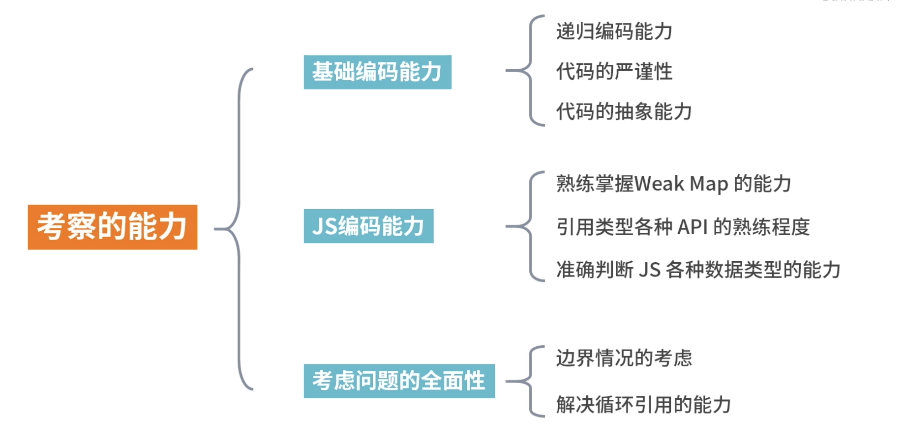

JS的编程过程中经常需要对数据进行复制，什么时候用深拷贝、什么时候用浅拷贝？
问题1：
拷贝一个很多嵌套的对象怎么实现？问题2：
写成什么样是深拷贝代码才能算合格？
浅拷贝的原理和实现
定义：自己创建一个新的对象，来接受你要重新复制或引用的对象值。如果对象属性是基本的数据类型，复制的就是基本类型的值给新对象；但如果属性是引用数据类型，复制的就是内存中的地址，如果其中一个对象改变了这个内存中的地址，肯定就会影响到另一个对象。
Object.assign
Object.assign 是ES6中object的一个方法，该方法可以用于JS对象的合并等多个用途，其中一个用途就是可以进行浅拷贝
语法：Object.assign(target, ...sources)
let target = {};
let source = { a: {b: 1} };
Object.assign(target, source);
console.log(target); // {a: {b: 1}}
let target = {};
let source = { a: {b: 2} };
Object.assign(target, source);
console.log(target); // {a: {b: 10}}
source.a.b = 10;
console.log(source); // {a: {b: 10}}
console.log(target); // {a: {b: 10}}
- 它不会拷贝对象的继承属性
- 它不会拷贝对象的不可枚举的属性
- 可以拷贝Symbol类型的属性
let obj1 = {a: {b: 1}, sym: Symbol(1)};
Object.defineProperty(obj1, 'innumerabe', {
value: '不可枚举属性',
enumerable: false
});
let obj2 = {};
Object.assign(obj2, obj1)
obj1.a.b = 2;
console.log('obj1', obj1);
console.log('obj2', obj2);
扩展运算符方式
利用JS的扩展运算符，在构造对象的同时完成浅拷贝的功能
语法： let cloneObj = { …obj };
/* 对象的拷贝 */
let obj = { a: 1, b: { c: 1}}
let obj2 = { ...obj }
obj.a = 2
console.log(obj) // { a: 2, b: { c: 1}} console.log(obj2) // { a: 1, b: { c: 1}}
obj.b.c = 2
console.log(obj) // { a: 2, b: { c: 2}} console.log(obj2) // { a: 1, b: { c: 2}}
/* 数组的拷贝 */
let arr = [1, 2, 3];
let newArr = [...arr]; // 和arr.slice()是一样的效果
concat拷贝数组
数组的concat方法其实也是浅拷贝
let arr = [1, 2, 3];
let newArr = arr.concat();
newArr[1] = 100;
console.log(arr); // [1, 2, 3]
console.log(newArr); // [1, 100, 3]
slice拷贝数组
slice方法仅仅针对数组类型
slice的语法为：arr.slice(begin, end);
let arr = [1, 2, {val: 4}];
let newArr = arr.slice();
newArr[2].val = 1000;
console.log(arr); // [1, 2, {val: 1000}]
手工实现一个浅拷贝
- 对基础类型做一个最基本的一个拷贝
- 对引用类型开辟一个新的存储，并且拷贝一层对象属性
const shallowClone = (target) => {
if (typeof target === 'object' && target !== null) {
const cloneTarget = Array.isArray(target) ? [] : {};
for (let prop in target) {
if (target.hasOwnProperty(prop)) {
cloneTaregt[prop] = target[prop];
}
}
return cloneTarget;
} else {
return target;
}
}
深拷贝的原理和实现
浅拷贝：浅拷贝只是创建了一个新的对象，复制了原有对象的基本类型的值
深拷贝：对于复杂引用数据类型，其在堆内存中完全开辟了一块内存地址，并将原有的对象完全复制过来存放
深拷贝定义：将一个对象从内存中完整地拷贝出来一份给目标对象，并从堆内存中开辟一个全新的空间存放新对象，且新对象的修改并不会改变原对象，二者实现真正的分离。
乞丐版（JSON.stringfy）
JSON.stringfy()是目前开发过程中最简单的深拷贝方法
let obj1 = {a: 1, b: [1, 2, 3]}
let str = JSON.stringfy(obj1);
let obj2 = JSON.parse(str);
consloe.log(obj2); // {a: 1, b: [1,2,3]}
obj1.a = 2;
obj1.b.push(4);
console.log(obj1); // {a: 2, b: [1,2,3,4]}
console.log(obj2); // {a: 1, b: [1,2,3]}
- 拷贝的对象的值中如果有函数、undefined、symbol这几种类型，经过JSON.stringfy序列化之后的字符串中这个键值对会消失
- 拷贝Date引用类型会变成字符串
- 无法拷贝不可枚举的属性
- 无法拷贝对象的原型链
- 拷贝RegExp引用类型会变成空对象
- 对象中含有NaN、Infinity以及-Infinity，JSON序列化的结果会变成null
- 无法拷贝对象的循环应用，即对象成环（obj[key] = obj）
function Obj() {
this.func = function() {alert(1)};
this.obj = {a: 1};
this.arr = [1,2,3];
this.und = undefined;
this.reg = /123/;
this.date = new Date(0);
this.NaN = NaN;
this.infinity = Infinity;
this.sym = Symbol(1);
}
let obj1 = new Obj();
Object.defineProperty(obj1, 'innumerable', {
enumerable: false,
value: 'innumerable'
})
console.log('obj1', obj1);
let str = JSON.stringfy(obj1);
let obj2 = JSON.parse(str);
console.log('obj2', obj2);
基础版（手写递归实现）
let obj1 = {
a: {
b: 1
}
}
function deepClone(obj) {
let cloneObj = {}
for(let key in obj) {
if (typeof obj[key] === 'object') {
cloneObj[key] = deepClone(obj[key]) // 是对象就再次调用该函数递归
} else {
cloneObj[key] = obj[key] // 基本类型得话直接复制值
}
}
}
let obj2 = deepClone(obj1);
obj1.a.b = 2;
console.log(obj2); // {a: {b: 1}}
存在得问题
- 这个深拷贝函数并不能复制不可枚举得属性以及Symbol类型
- 这种方法只是针对普通得引用类型的值做递归复制（数组、日期函数、正则、错误对象、function这样的类型不能正确拷贝）
- 对象的属性里面成环，即循环引用没有解决
改进版（改进后递归实现）
- 针对能够遍历对象的不可枚举属性以及Symbol类型，我们可以使用Reflect.ownKeys方法
- 当参数为Date、RegExp类型，则直接生成一个新的实例返回
- 利用Object的getOwnPropertyDescriptors方法可以获得对象的所有属性，以及对应的特性，顺便结合Object.create方法创建一个新对象，并继承传入原对象的原型链
- 利用WeakMap类型作为Hash表，因为WeakHash是弱引用类型，可以有效防止内存泄漏，作为检测循环引用很有帮助，如果存在循环，则引用直接返回WeakMap存储的值
const isComplexDataType = obj => (typeof obj === 'object' || typeof obj === 'function') && (obj !== null)
const deepClone = function (obj, hash = new WeakMap()) {
if (obj.constructor === Date)
return new Date(obj) // 日期对象直接返回一个新的日期对象
if (obj.constructor === RegExp)
return new RegExp(obj) // 正则对象直接返回一个新的正则对象
// 如果循环引用了就用weakMap来解决
if (hash.has(obj)) return hash.get(obj)
let allDesc = Object.getOwnPropertyDescriptors(obj)
// 遍历传入参数所有键的特性
let cloneObj = Object.create(Object.getPrototypeOf(obj), allDesc)
// 继承原型链
hash.set(obj, cloneObj)
for (let key of Reflect.ownKeys(obj)) {
cloneObj[key] = (isComplexDataType(obj[key]) && typeof obj[key] !== 'function') ?
deepClone(obj[key], hash) : obj[key]
}
return cloneObj
}
// 下面是验证代码
let obj = {
num: 0,
str: '',
boolean: true,
unf: undefined,
nul: null,
obj: { name: '我是一个对象', id: 1 },
arr: [0, 1, 2],
func: function () { console.log('我是一个函数') },
date: new Date(0),
reg: new RegExp('/我是一个正则/ig'),
[Symbol('1')]: 1,
}
Object.defineProperty(obj, 'innumerable', {
enumerable: false, value: '不可枚举属性'
});
obj = Object.create(obj, Object.getownPropertyDescriptors(obj))
obj.loop = obj
let cloneObj = deepClone(obj)
cloneObj.arr.push(4)
console.log('obj', obj)
console.log('cloneObj', cloneObj)